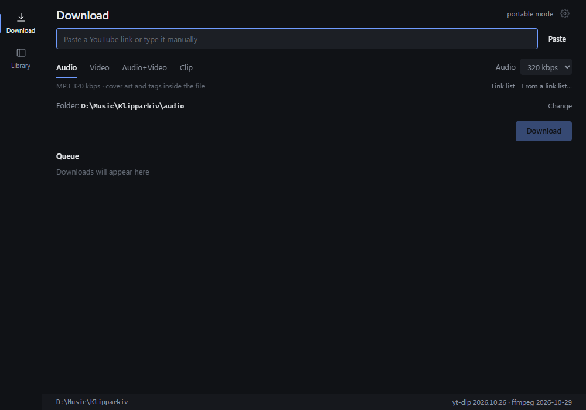
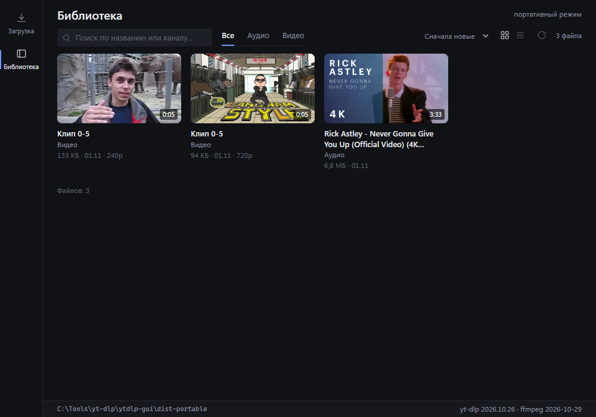

Backing tracks and lessons, offline
Audio, video and timecode clips in a local library on Windows and macOS. No terminal, no account.
- Windows 10/11, x64
- macOS 11+, Intel and Apple Silicon
- ~80–105 MB download
- ~240 MB on disk

Start here
1. Download the right file
- Windows 10/11 x64…-win-x64.zip
- macOS Apple Silicon…-mac-arm64.dmg
- macOS Intel…-mac-x64.dmg
On a Mac, check Apple menu → About This Mac → Chip / Processor if you are not sure which DMG you need.
Do not download the standalone .exe, the .app.tar.gz, a .sig file or update.json for a first install. Those are update files.
2. Install
Windows: unpack the whole zip folder, then run klipparkiv.exe. SmartScreen may ask once: More info → Run anyway. Keep the folder writable.
macOS: open the DMG and drag Klipparkiv into Applications. The build is ad-hoc signed, not notarized. On first launch use System Settings → Privacy & Security → Open Anyway or right-click → Open.
Windows: if the app says that yt-dlp, ffmpeg or ffprobe is missing, the bin folder was not unpacked next to klipparkiv.exe. Quit the app from the tray, unpack the whole zip again and start it from that folder. The message shows the exact path and the Windows error.
3. Use it
- Paste a link that yt-dlp supports.
- Check the preview, then choose Audio, Video, Audio + Video or Clip.
- Pick a folder and press Download.
- Open Library to search and play the saved file in your system player.
From a link to a file
- Link
- Title, channel, duration and formats before anything downloads.
- Format
- MP3 128–320 kbps, or MP4 H.264/AAC 480p–2160p when the source provides it. If H.264 is missing, the best available stream is used and some players may not open it.
- Clip
- Timecode cut,
00:01:30-00:05:00, audio or video. Leave the start or end empty to cut to the edge. - Playlist
- Whole list or just the linked video, with an optional item range. Files go into a folder named after the playlist.
- Links
- Paste several links at once, or drop a
.txtonto the window. - Queue
- Up to 4 downloads at a time, with titles, playlist progress like
2/42, pause, resume and cancel. - Library
- Covers, search, filters, sorting, open in the system player.
- Archive
- What you already saved is skipped next time. Clips use deterministic names instead.
There is no built-in practice player in the current release. Playback opens in your system player; a practice player is the next major feature.

Windows 10/11 or macOS 11+
WebView2 is usually already on Windows; if it is missing, install the Evergreen Runtime. The app needs about 240 MB on disk and a folder it can write to. Windows keeps app data in data\, media in audio\ and video\; WebView2 may keep its own cache in %LOCALAPPDATA%. macOS keeps the library and media in ~/Movies/Klipparkiv, and settings and updates in ~/Library/Application Support/Klipparkiv. For files over 4 GB use exFAT or NTFS on Windows; on macOS use APFS, HFS+ or exFAT.
macOS
Native .app for Intel and Apple Silicon, with yt-dlp, ffmpeg and ffprobe inside the bundle. The DMG and the app bundle include the license and privacy notices.
The build is ad-hoc signed, not notarized by Apple. On first launch use System Settings → Privacy & Security → Open Anyway (macOS 15+) or right-click → Open (macOS 14 and older). If macOS still blocks it, run:
xattr -dr com.apple.quarantine /Applications/Klipparkiv.app- Klipparkiv.appthe app
- Contents/Resources/binyt-dlp, ffmpeg, ffprobe
- ~/Movies/Klipparkivlibrary and media
- ~/Library/Application Support/…settings and updates
Ready to try it?
Download the zip on Windows or the DMG on macOS. The app carries yt-dlp and ffmpeg, so there is nothing else to install. A first download takes one link, one mode and one folder.
- klipparkiv.exethe app
- bin\yt-dlp.exethe downloader
- bin\ffmpeg.exemuxing and cuts
- bin\ffprobe.exeformats and duration
- LICENSE, notices, LICENSES\legal files